Basic Understanding and Setup
This page will be going over general techniques and workflows riggers go through to setup a decent character rig through 3ds Max and Maya. When you receive a humanoid model that you will need to rig, you will first need to fit a biped skeleton to it. When a modeler creates a character, they use this rig to match all their proportions, and the biped should be included and the figure posed in the file.
Joint Orientations
If you will want to utilize CRYENGINE's integrated IK system it is important to keep in mind that the joint orientations must be setup the same way and naming of the joints as well, as defined in your chrparams file.
For Maya Users: Also be sure that you work with -Z as your front view as this is the front in-engine.

The joint orientations must be aligned as described:
Arms: z= forward, X= downward along arm
Legs: z= forward, x= downward along legs
Eyes: Y= forward, z= along vertical axis
Fitting the Rig to a Character
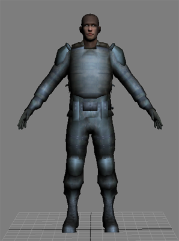 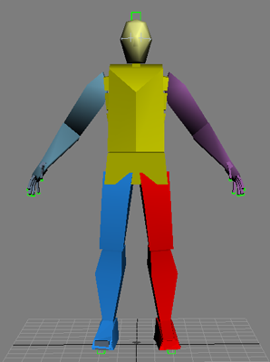
In the above left image, you see the kind of object you will be receiving from a modeler. The arms are in a default position and the object should be frozen. The object may or may not be one single mesh, with no unattached pieces, and likely a head. On the right, you see the biped rig. If your character does not have a biped skeleton it should have one that is posed and aligned already at this point. Import the default biped into your character's scene.
Figure Mode (Max Users)
Now, you will be lining the biped up with the character that you have been given. As stated above, do not worry if the character is not in the same pose as the biped. You will now enter figure mode to align the biped with the character that you are going to rig.
- Click the motion tab on the Command Menu
- With a part of the biped selected, click
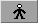
rollout. - Next, rotate the biped joints to fit the character. This may take a while.
Standard Rigging For Maya Users
Now, you will be lining the biped up with the character that you have been given. As stated above, do not worry if the character is not in the same pose as the biped. In Maya you will have your jointed skeleton, then parented on that will be the phys mesh and next to it will be the copied phys mesh but with the parent frames.
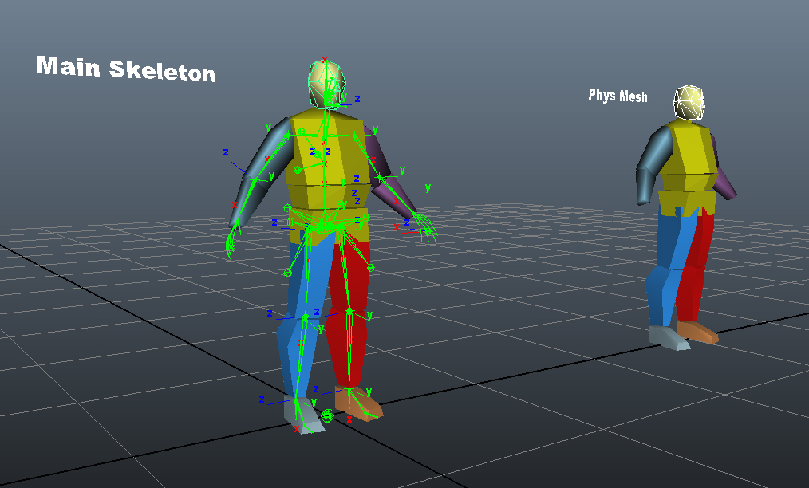
Important Tips and Tricks
You can lower the transparency of the material so that you can better see the bones inside the character to check proportions. This hand is perfectly aligned and fits to the proportions of the model.
For Max Users: Another way to do this is to turn on the built in X-Ray mode by pressing Alt+X.
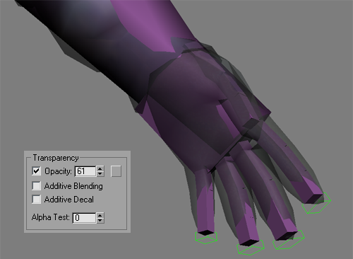 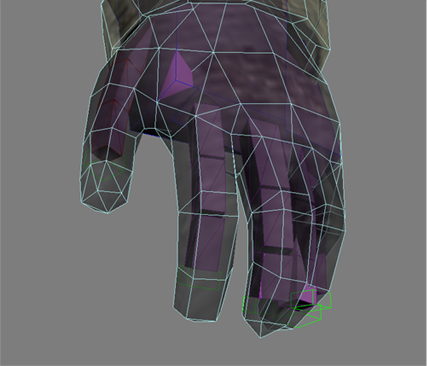
- This is an example of a model that was not created to fit the biped, the arm is longer than the biped arm, and no amount of joint rotations will fix this.
- Biped body parts cannot be removed, however unwanted parts can be hidden. If you delete a any single part the entire biped will be deleted!
- You can use the Page Up and Page Down keys to cycle through links in the biped skeleton.
- The head, toes, and fingertips should extend slightly beyond the mesh extents to fulfil the requirements of Physique.
- The alignment of the biped and the mesh can always be restored by turning on Figure mode, regardless of which motion file happens to be loaded.
- After fitting a biped to a mesh in Figure mode, use Save on the Biped rollout to save a figure file (.fig). This way if you accidentally lose the positioning, you can still load the old alignment.
For Maya Users: Another way to do this is to click "Shading" then enable "X Ray" or other various rendering options to better viewing.
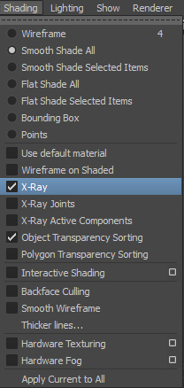
Skinning
You are now able to begin the skinning process of your character, the next part will be split into two sections between Max and Maya. Each one will provide supplemental information on the setup for each. Before starting to skin the character it would be recommended that the character's local pivot is zeroed out at [0,0,0], and the model's scale is [100%,100%,100%]. If not, go into the Utilities menu and Reset the Xform on the model for Max users, Freeze Transformations for Maya users.
For Max Users: You can begin by using 3ds Max's Skin modifier in place of the old physique for the skinning purposes. Skin modifier is a much newer and more versatile addition in 3ds Max. There is also Cryskin which features a more accurate preview of how your skinning will look in Sandbox.
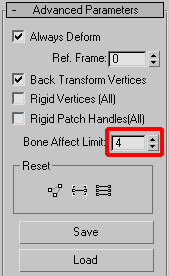
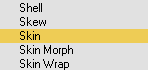
As you have now aligned the biped to the model, you are ready to proceed with skinning.
- Select the model, go into the modifier panel and add the Skin Modifier. Select the newly added Skin Modifier and in the Parameters rollout menu you will notice an empty list window.
- Click on Bones: "Add" button, and a "Select Bones" window pops out.
- Check the "Display Subtree" and "Select Subtree" checkboxes. Click on Bip01 and press Select button.
You have just added the biped bones to your character. But not all the bones that you have added are going to be necessary for the actual skinning. For instance, unlike in Physique, Skin does not require the Nub Bones to be added for the skin to work properly. - After all the bones are added, go into the "Advanced Parameters" rollout and set the Bone Affect Limit to 4 instead of 20. (up to 8 bones affecting each vertex are supported, but if you don't need 8 we still recommend to set the limit to 4, as 8 will take more memory and affect performance).
CRYENGINE always supported 4 weights.
Since CRYENGINE 3.6 the engine supports 8 weights instead of 4, but only on CPU. When running on GPU, the 4 smallest weights were ignored. (use CPU instead of GPU by setting flags=8 on the attachment in the CDF file, or the "software skinning" option in character tool in CRYENGINE 3.7)
Since CRYENGINE 3.8 the engine supports 8 weights on GPU as well.
For Maya Users: As you have now aligned the biped to the model, you are ready to proceed with skinning. Select the model and your rig, go into the skin panel, then Bind Skin and Smooth Bind. Be sure that when you skin the character to the rig you have Quaternion skinning and no more than 4 influences.
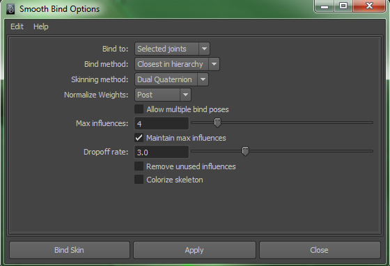
Most of your weight editing will be done via the Paint Skin Weights Tool:
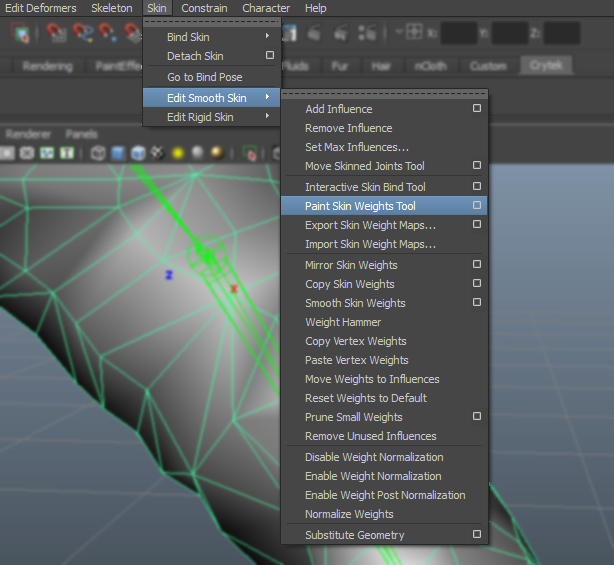
Painting Weights In Maya
Now you can proceed with the fine tuning of the skinning. There are various techniques to keep in mind but often individuals will develop their own processes.
Paint Skin Weights Tool
The Paint Skin Weights Tool is one of the rigging tools in Maya. With the Paint Skin Weights Tool, you can paint weight intensity values on the current smooth skin. If you want to set individual skin point weights to specific values, you can use the Component Editor.
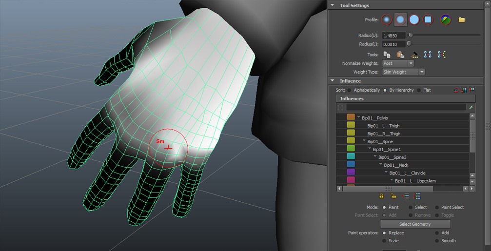
Note: Reflection is disabled for the Paint Skin Weights Tool. You can use Skin -> Edit Smooth Skin -> Mirror Skin Weights as an alternative method for reflecting skin weights.
When using the Paint Skin Weights Tool, you cannot select the joint you want to paint the weights for through the Maya marking menus. Instead, you need to select the joint from the list of influences in the Paint Skin Weights Tool settings or -click a joint, then press the up and down arrow keys on the keyboard to navigate your character's joint hierarchy. While you are painting skin point weights, you can reset the weights to their initial values at any time.
Copying Smooth Skin Weights
You can copy smooth skin weights from one smooth skin object to another, or from one group of smooth skin objects to another. You can also copy skin weights on selected components of the skin, or from a single vertex.
Copying smooth skin weights can save a lot of time if your project involves setting up several similar characters, as it allows you to transfer weight information between characters. Rather than skinning all of your characters and painting weights for their deformation effects individually, you can focus your painting efforts on one character, then copy those weights to the other characters.
For best results, the skeleton on the character you are copying from and the skeleton you are copying to should have the same structure. If the skeletons are similar, Maya will still try to copy the weights. However, if the skeletons are radically different in scale or proportion, consider doing the following before you copy:
Scale and rotate the joints to make the skeletons better match.
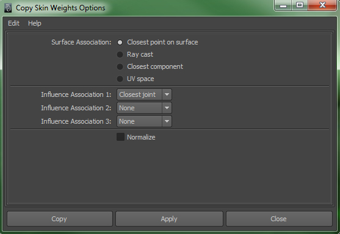
Copy skin weights using the UV space influence association setting provided UVs exist on the both characters. In addition, the skeletons on each character should be in the same pose during copying. If the orientation of the joints are not similar, the copying can lack some precision, which means you may have to do some touch up painting to the results.
If the skin objects have different numbers of CVs, or if the ordering of the CVs is different, the copying will intelligently take into account the differences and provide the same type of weighting. This is very useful if you want to apply the smooth skin weighting from a high-res character to a low-res version of the character.
While you can copy skin weights between skin objects of different types, the options work best when the source object is a polygon mesh.
Mirroring smooth skin weights
You can mirror smooth skin weights, either from one smooth skin object to another, or within the same smooth skin object. You can also mirror skin weights on selected components of the skin.
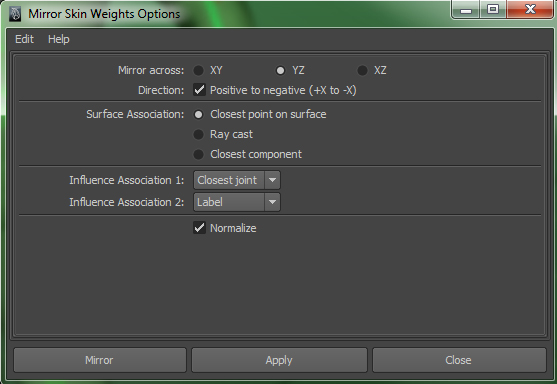
Mirroring smooth skin weights greatly speeds up the process of editing and fine-tuning skin deformation effects. For example, you can perfect the smooth skin weighting for a character's right shoulder area, then simply mirror the weighting to the character's left shoulder.
Maya mirrors weights across planes defined by Maya's global workspace axis. For mirroring to work properly, the skinned object (or character) should be centered on the global axis, or at least aligned along the axes you want to mirror about. Also, the skinned object (including its skeleton) should be in a pose that is symmetrical across the mirror-plane.
Painting Weights In 3ds Max
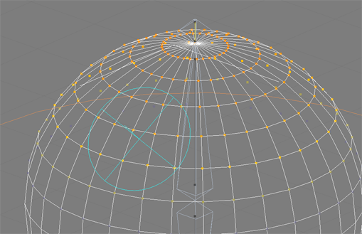
Now you can proceed with the fine tuning of the skinning. At your disposal are several very effective skinning tools:
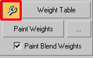
Adjusting Envelopes
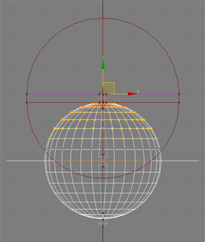
The way of working with skin is usually a personal preference. Yet there is really one common way of starting skinning and that is using the Skin Envelopes.
- Press Edit Envelopes in the Parameters rollout. As you go into the Edit mode, the model will turn a slightly darker color and you will see the bone envelopes. To make the rough weight value of bones on the verts visible, Max colors the verts that are affected by bones. Dark red means the area is affected either almost entirely or completely by the selected bone. When the affect decreases the colors go to orange, yellow, blue, and then, if there is no affect on the verts, they are not colored at all. To adjust the envelopes select the outer envelope control verts and move them. Adjust all the envelopes the way you want them to be. You will notice that some envelopes affect verts that you don't want them to affect at all i.e; the leg joints: right leg bone might have some affect on some verts on the left leg. To fix this problem check the "Vertices" checkbox in the Parameters rollout, select the verts that you want to be excluded from the bones affect area, and press the "Exclude Selected Verts" button:
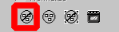
- Once you have adjusted the envelopes as much as possible for the main areas, select all of the vertices and press the "Bake Selected Verts" button. After you have done that, you are no longer going to affect the weights of the vertices by the envelopes. To turn the envelopes off, go into the display rollout and check "Show No envelopes" box.
Weight Tool
- This tool gives you access to the numerical entry of the bone affect onto selected vertices. You can scale the weights, set the weights to certain numbers, blend weights, etc... For more precise information please refer to the 3ds Max User Reference.
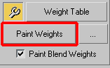
Paint Weights
- This is a more of an artistic tool that skin has that allows the user to apply the skin with a sort of a brush with the options of changing the strength and diameter. When the tool is on, holding Ctrl+Shift and Click+Move the mouse to change the diameter. Holding Alt+Shift and Click+Move the mouse to change the strength. You can also open the "Painter Options" dialog to get access to fine tuning the skin paint tool. The best part about actual painting weights is that you can use a Pen Tablet with pressure sensitivity and really speed up the process. Another highly valuable tool for Painting weights is the option to Paint Blend Weights. To use the blend weights option just check the box right underneath the Paint Tool. It will blend the weight of the vertices to balance them out between each other.
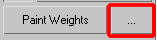
Mirror Weights
- Mirror Weights tool is mainly used to copy the weighting information of the verts on one side of the model to the other. That works only in the case the model and the rig is perfectly symmetrical along either the x,y or z plane. If the symmetry is not perfect, one can adjust the mirror threshold, but raising it higher then 0.8 usually means that the model or rig is having some issues with it's symmetry and some undesirable results may occur. To get more familiar with using the mirror tool refer to the 3ds Max Reference files.
- If you are skinning a character that is broken into separate pieces, the best way to skin is to instance the skin modifier to every piece. When you have done so, selecting all of the pieces together will allow you to adjust the weighting on all of them at the same time as if working on one single mesh.
Physique
- Now that you have successfully positioned the biped skeleton inside the character mesh, you are ready to attach the mesh with Physique. Physique deforms the control points, which in turn deform the character. When you apply Physique to the character and attach it to the biped skeleton, Physique determines how each component of the biped skeleton influences each vertex of the character skin, based on settings you will specify.
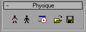
Attaching the Character Biped to a Physique
- After you have adjusted the biped skeleton to fit in the mesh, leave Figure Mode on while you attach the mesh to the biped skeleton with Physique.
- To attach your character mesh to Physique, select it and click Attach To Node
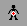
- You will now turn off Figure Mode, and begin to work on envelopes and point weighting.
Vertex Link Assignment Rollout
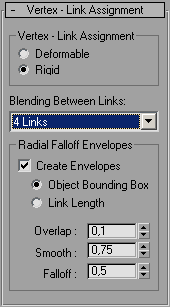
Here you see the Vertex Link Assignment Rollout. You will see these options if you are initializing or re-initializing Physique on a character mesh. Lets go through these options as they relate to skinning and the engine.
- Rigid Vertex weighting - as discussed earlier.
- Blending Between Links: 4 Links - Our engine supports up to 4 bone envelopes in a character rig sharing a single vertex. Leave it on 4, even though you probably will not need 4 envelopes sharing verts anywhere but the shoulder (on a biped).
- Of course you want it to Create Envelopes, and use the bounding boxes to make them. This is why for instance, the finger biped skeleton bones should have extended past the fingertips.
- The other options you can leave at the defaults. Over time you will probably settle on different settings there that you want.
Briefly, the other options are:
- Overlap - This sets how far the envelopes overlap one another. Default=0.1.
- Smooth - This sets the distance between the inner and outer bounds of an envelope by scaling the outer boundary. Range=0.0 to 10.0. Default=0.75.
- Falloff - This sets the rate of falloff between the inner and outer boundary of an envelope. The falloff rate is a Bezier function. Range=0 to 10. Default=0.5.
Changing the Biped Skeleton Alignment
Figure mode allows you to adjust the biped after the character mesh is attached to it with Physique. After using Physique to attach a character mesh to the biped, you may want to realign a biped limb/joints relative to the character for better deformation. You must still deactivate Physique, realign the limbs, and then a Reinitialize in Physique. You can then reactivate the Physique modifier.
Weights assigned to vertices do not always add up to 1.0 or greater, when this happens, instead of leaving vertices behind as the character moves, Physique will normalize to a value of 1.0. (Based on their current weighting percentages per link?)
By adjusting the falloff, overlap, scale, and other envelope parameters you can change the vertex weight distribution across multiple links. This will then change the way the character mesh is deformed as the biped skeleton moves. 80% of your time rigging a biped character in Physique will be correcting the way the character mesh deforms on a character through the use of envelopes.
Deformable and Rigid Vertices
There are two different ways links can be enveloped, deformable and rigid. You do not use deformable vertices; only rigid weighting, which is also known as Linear Skinning. From the manual: 'Rigid envelopes determine vertex-link assignment based upon the linear 3ds max link and move in an immobile relationship to the link.' Vertices in rigid envelopes though, are (blended) in the overlap area of other envelopes as discussed earlier. Take a look at the following section for a more detailed look at the Vertex Link Assignment Rollout.
The Art is in the Details: Vertex Sub-Object Weighting with Physique
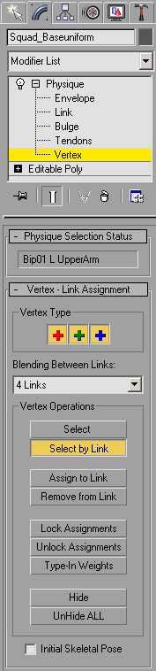
The most important thing about enveloping a character, is knowing how to override those envelopes. You cannot get by with enveloping many times, and you must define weights on a point-by-point basis by manually assigning Vertex Properties. For example, you can select vertices and just remove a link's influence from them entirely. You can also change the weight distribution between links for a single vertex by using type-in weights. Here is a rundown of what you see at your left:
Select - This allows you to select vertices when in the Vertex Sub-Object Weighting mode. Click
Select by Link - This will select all vertices that are influenced by the selected link.
Assign to Link / Remove From Link - This will add or remove weighting from the selected vertices. You do this by selecting the verts, then choosing an option and then selecting the link in question.
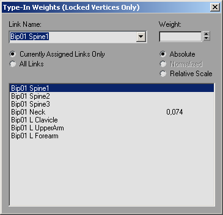
Locking Assignments, and Type-In Weights - You can type in a link weight value per vertex for multiple links. To do this they must be locked. When you click the Type-In Weights button, you will be presented with the dialog on the left. Now for the fun part (or most depressing), you will now have to go through and tweak individual point weights one vert at a time.
Advanced Rigging and MaxScript in Physique
Character Studio (CS3.X) does not have MaxScript support. You may have noticed this if you were trying to echo commands in MaxScriptListener to create a script to mirror envelopes or weights (and it would be such a simple script too!). This is a major problem with Physique and Character Studio in general. Luckily for us, enough people seemed to have complained, and Discreet later released some source code on their website that exposed some of Physique to MaxScript. The source code is attached to this tutorial. The source code has also been compiled into a .GUP file for Max 7. Here are links to the files:
- PhysiqueInterface.zip - Physique exposure source from Discreet.
- IPhysique.gup - Physique exposure compiled for Max 7.
Place IPhysique.gup into your \plugins directory. You can now use the hooks documented on the Discreet Sparks site linked above to make scripts that take advantage of Character Studio and Physique features.
Do not use a compiled version of the Physique Exposure source that you have downloaded from a website or external server, ours is compiled to work with the latest version of Max and meld with our internal workflow and tools.
Advanced MaxScripts That Make Use of Discreet Physique Exposure Source
There are very few MaxScripts that utilize the Physique Exposure plugin/source. They have been developed by people working at studios and have now been ported to free tools.
MirrorWeights/PhyTool - Terminal Reality
This is a great tool for mirroring all assigned or locked vert weights in across the X axis. Here is a quick rundown:
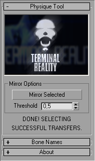
1) Weight up one part of the model (i.e; hand).
2) Select the area - you may select by Element, Poly, Edge or Vertex (Do not select verts in Physique Sub-Object mode).
3) Click Mirror Selected.
4) When it is finished, it will select the vertices that were successfully mirrored.
5) Enjoy all the time this has just saved you!
Tips:
- Only works with EditableMesh and EditablePoly objects.
- Weight individual parts and transfer them over part by part as you go (i.e. hand, foot etc...)
- If it did not successfully mirror all the points you wanted, try a large threshold.
- When using Physique it's good to deactivate all duplicate links. Deactivating the duplicate links will keep the script from mirroring to the wrong bone, AND more importantly it will keep them out of the Locked Type-In Weights window. To deactivate simply enter Link Sub Object mode in Physique, and uncheck active.
Problems:
- When you have multiple links that share the same name, the weights will override each other. This isn't really a problem on the hand and the shoulders, but the hips may suffer.
- The weights copy relative. So if you have a vertex weighted "1" and "1" two different bones. The mirrored vertex will be weighted "0.5" and "0.5." You won't notice a visible difference but it may still be confusing at first.
This script has been updated to work with Max7, if you find and download the one online, it will not work with Max7 or our tools, so use the one attached to this tutorial.
Physique Import/Export Weights
- import-export.zip
This tool allows you to save all vertex weights of a character, you can even apply the saved weights to a mesh who's point order has changed! No more re-rigging the entire character because the mesh was edited. Here is a quick rundown:
1) Select the verts you would like to save.
2) Click Export, and type in the filename. The weights are now saved.
3) You can change the point order by adding or removing geometry.
4) If you import them via Position or Index, position compares the positions if the point order has changed, index uses the point order to remap the weights in a mesh that has not changed.
5) When comparing and remapping vertex weights, Distance Check measures the distances between mirrored points on each side of the X axis, Threshold Check will use the same threshold-type implementation used in the script above.
Verts are influenced by more than five links.
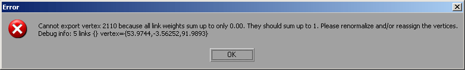
On export you receive this message. After initializing a Physique with <4 links/bones, how are there 5 assigned to one vert? How do you find this vert?
1) Find it by point index: Use a MaxScript to find the vert by point index. Open up MaxScript Listener and enter the following: $Rifleman_Light_Body.verts[#baz] = #(2110)
Then press enter. The vert is now stored into a selection set 'baz' and you can select it. If this worked MaxScript Listener will return: #(2110)
Select: $Rifleman_Light_Body.verts["baz"]
This should select the vert you were looking for. If it is not the point you are looking for, follow the next step.
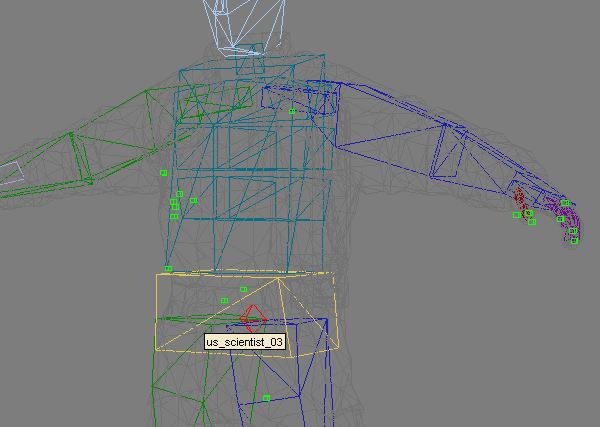
2) Find the vertex by it's location: Use a MaxScript to generate a dummy object at the exact location of the point. Generate a dummy object around it, with MaxScript of course: dummy pos:[53.97,-3.56,91.98] boxsize:[1,1,1]
This will create a dummy directly around the point in question, and return: $Dummy:Dummy06 @ [53.970001,-3.560000,91.980003]
Pictured left is an example of the worst case scenario, this character had many unweighted vertices, no matter how many times it was initialized. In this case, only one hand has been weighted, and then mirrored it to the other side, which works well. NOTE: The point lies in the coordinate system relative to the mesh object and not always the world coordinate system.
IF THIS DOES NOT WORK: Sometimes the dummy will be created in a spot with no point. You will need to add a 'reset Xform' to reset the transformations, depending on certain things the modeler may have done to the model. Add the xform modifier between the editable mesh and physique in the stack, as shown below:
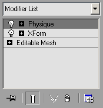
Now this will mess up physique, so you may want to save first. It helps to open another copy of Max and load the character, you can then create the dummy on the version with transformations reset, and find the same vert on the character with physique applied in the other running version of Max. If the dummy is still not encasing the point, you may need to try exporting the character again as the numeric location of the erroneous point may have changed in the error message.
Let's get info on it by clicking 'Type-In Weights'.. (It has to be locked, if not it wouldn't have 5 links unless you messed up in initialization by selecting N Links).
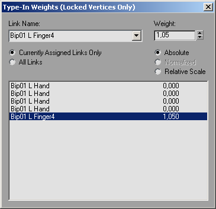
It has five links assigned, but in 3ds Max, four of them are the exactly the same bone, and on top of that, they have zero influence. This should count as only one link, but it doesn't. It also does not ignore links with values of zero, or even multiple links with the same name.
Unfortunately, the only fix is to now select the vert, unlock it, remove it's assignments, and assign it to a new link. Then you have to re-weight it. You have to do this for every point that you find in the mesh from now on.
NOTE: The chances of this happening would be greatly lessened if you just initialize with two or less links/bones. This will make you have to work a tad harder on the shoulder carriage, but in the end you will have less problems like this.
Known Issues, Problems, and Solutions
Deformation in the Character Editor not matching what is in your DCC tools:
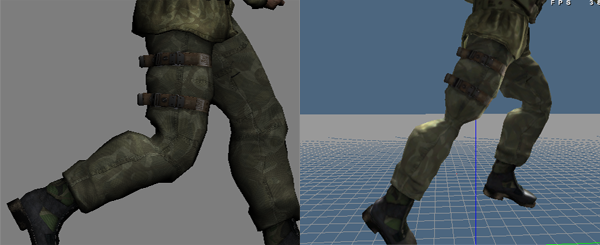
There are a few reasons the deformations you see in Maya or Max may not match what you see in Character editor. Here are some fixes to known problems:
1) Quaternion Skinning - Quaternion Skinning must be used in all skinning procedures as any other will result in abnormalities in the engine.
For Maya Users: Simply be sure you have the Quaternion method chosen when you bind your skin.
For Max Users: Spherical skinning may be enabled (although currently it is disabled by default). To disable Spherical Skinning, enter the following console variable: ca_SphericalSkinning 0. This will drop to the default linear skinning you are accustomed to from Max.